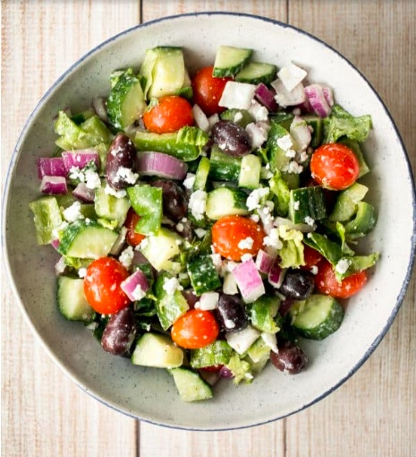

Greek Salad

Fresh tomatoes, crunchy cucumbers, crisp red onions, green peppers,
romaine lettuce, savoury olives and crumbled feta cheese all tossed
in a homemade lemony Greek salad dressing makes for the most perfect
Greek salad. This refreshing classic salad takes just a few minutes to
prep and toss together.
I love Greek food and I love salad... so it goes without saying that
I love Greek salad. In fact, it is probably my favourite salad of all time.
For starters, I could eat olives and feta cheese all day. I eat olives… out
of the container… with a spoon… So, how can I say no to a salad that contains
all of my favourites?
Ingredients
- Grape tomatoes
- Red onion
- Cucumber
- Green pepper
- Kalamata olives
- Feta cheese
- Romaine lettuce
- Olive oil
- Lemon juice
- Oregano
- Salt
- Pepper
Steps
- Step1: Prep and combine the romaine lettuce,
cherry tomatoes, red onion, cucumber, green peppers,
olives and feta cheese in a large bowl.
- Step 2: In a small bowl, make the lemon Greek salad
dressing by whisking together the olive oil, lemon
juice, oregano, salt and pepper.
- Step 3:Pour the dressing over the salad and toss to
combine. Add more black pepper to taste